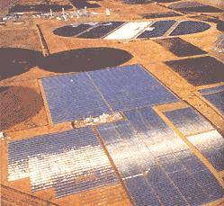
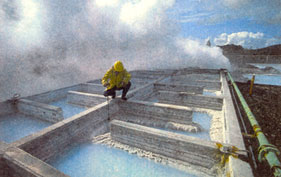
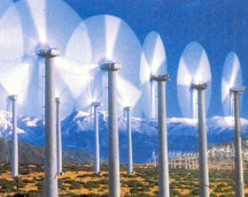
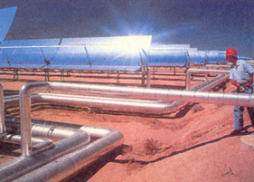

Uncover the players, the power and the
possibilities of renewable energy.
Large-scale solar energy facility in Daggett, California.
Across the United States, buyers may now purchase "clean" kilowatt-hours from wind turbines perched atop ridges in Wyoming and Colorado, solar panels that cap parking structures in California, or geothermal power plants that harvest 500-degree underground temperatures.
According to the American Wind Energy Association in Washington, D.C., more than 140 utilities in the U.S. are now offering "green" power from renewable energy sources, while some unregulated energy companies are already operating in some states. Just look for power labels like Blue Sky, Wind for the Future and Salmon-Friendly Power, whose names are intended to evoke images of pure air, waste-free water, and rivers that nurture fish and wildlife.
Paul Komor, research director for E Source, a private energy information provider in Boulder, Colorado, says that the good news about the fledgling green power industry is that renewable energy is being developed all over the country. "Buying green power is the single best thing you can do with your money to help the environment," he adds.
Nevertheless, buyers may feel they need advanced degrees in environmental studies and economics to wade through an energy company's befuddling list of electricity alternatives, energy mixtures, pricing terms and sometime questionable claims about which kinds of power are truly "clean."
In fact, Kirk Brown, assistant director of San Francisco's Center For Resource Solutions (CRS), one of a handful of organizations that "certify", or guarantee, that clean power is truly clean through meeting given environmental standards, says that blindly choosing any kind of green power program isn't the best thing to do. "A green power program may not be delivering any renewable energy," he says. "That's the tricky issue."
Just look at GreenMountain.com , which is based in South Burlington, Vermont, and is the largest green power marketer in the United States. They offer a product that includes renewable energy mixed in with more conventional sources of power in an effort to keep the price down. However, others do sell 100% renewable energy while offering to build new clean power plants in the process. The cost may be higher for the individual, though much lower for the environment. For a price about 80% higher per unit of energy than electricity from traditional sources, PacifiCorp in Portland, Oregon, says it will build new wind turbines to provide customers with 100% renewable energy.
That said, pricing terms vary from one company to another. Some sellers offer green energy in "blocks," others in kilowatt-hours, still others for a monthly fee. In general, green power costs 10% to 30% more than conventional sources of electricity.
To further confuse buyers, companies haven't been completely honest about the sources of their power. In a test program in the mid-1990s, Northeast Utilities in Berlin, Connecticut, claimed that its environmentally friendly energy was harnessed with the force of water. They failed to mention that nuclear- and fossil fuel-fired plants provided some of the muscle to move the water.
"If you say it's green, it ought to be deep forest green, not lime green or aqua," says Angus Duncan, president of the Bonneville Environmental Foundation in Portland, Oregon. "Consumers need to comprehend where the kilowatt-hours come from before color-coding their electricity."
Geothermal water coolers in Pahoa, Hawaii.
Electricity flows to consumers from a large pool that includes power from a variety of different sources. In the Northwest, for example, some of the energy comes from utility-owned facilities that feed pulverized coal into steam boilers that produce electricity. The utilities transfer the power onto 345,000-volt transmission lines, where it becomes part of the regional pool of electricity. Says Duncan: "We sit with our straws and suck electricity out of that pool."
The real problem, however, is that about 56% of electricity in the U.S. is generated by coal-fired plants that produce the world's most notorious greenhouse gas: carbon dioxide. According to the Natural Resources Defense Council (NRDC), global concentrations of carbon dioxide have increased by about 30% over the last century.
Much of the rest of the electricity mix comes from the other unfriendly produc ers: gas-fired units, which also release carbon dioxide; nuclear reactors, which spawn nuclear waste; and hydroelectric plants, many of which are ill-equipped to allow fish to pass unharmed through their giant turbines.
"Our object, over time, is to change the mix so that there are fewer and fewer coal and gas plants and more low-impact hydroelectric, wind and solar plants creating the electricity," Duncan says.
Until recently, consumers had no choice but to purchase "brown" power from regulated monopoly utilities. The utilities sold nonrenewable power because these were the least expensive options.
However, customers may now have more choices for two reasons. First, prices for alternative sources of energy - especially wind power - have dropped dramatically in recent years because of technological improvements. In fact, in some parts of the country like Colorado, wind power is close in price to the cost of electricity generated by new gas-fired units.
Second, consumers have more power purchase options. Policy-makers are deregulating the electric industry, and in the states that have embraced deregulation - including California, Pennsylvania, New Jersey, Maryland, Delaware and Massachusetts - competing energy companies offer a broader array of services. In states that are not yet deregulated, utilities are now offering clean power to improve their images in anticipation of deregulation.
"The utility companies see green power as a way of keeping the environmentalists off their backs," says Eugene Rosalie, director of Northwest Environmental Advocates' program Renew 2000. "They want the customers to see them as good guys."
Still, it's wise to keep an eye out for the regulated utilities, which are most likely to deceive their customers.
"In regulated regions, you don't have that neverending, pots-and-pans, bang-on-drums criticism you get in unregulated markets," says CRS's Kirk Brown. "In regulated states, utilities' competitors won't take out full-page ads and say 'Don't buy this one."'
In states where policy-makers have deregulated the electric industry, new companies believe that consumers are willing to pay extra for clean kilowatts because they want to make the world a little greener.
GreenMountain.com is one of those well-meaning start-ups, despite its continued run-ins with environmental groups in the wake of Chairman Sam Wyly's highly publicized contributions to the 2000 presidential election race. Wyly used a loophole in IRS tax code to submit over $200,000 to George W. Bush's presidential campaign. Though Wyly - an avowed environmental activist-may have his heart in the right place, Bush has been pilloried of late for his clean air and water record as governor of Texas.
Whether they want to burnish their images or improve the environment, utilities and unregulated companies from Boston to Seattle have unveiled a variety of green power products with a mindboggling number of price tags and pricing schemes.
Public Service Company of Colorado, a regulated utility in Denver, offers Windsource, a program that allows customers to invest directly in the construction of new wind power plants. Customers pay $2.50 per month for each 100-kilowatt-hour "block" of wind power in addition to the $7 they'd normally pay for that much power. The utility says that buying 100 kilowatt-hours of wind power reaps the same environmental benefits as planting a half-acre of trees or refraining from driving a car 2,400 miles.
Prices for wind power have dropped dramatically in recent years because of technological advancements.
In states like California, where the electric industry is deregulated, GreenMountain.com offers Solar For The Future, a product made up of 100% renewable energy, 5% of which is from newly built solar plants. "For every 1,000 customers that sign up for Solar For The Future, we will build new solar generation," says GreenMountain's Woodbury. Average customers in California, who use about 500 kilowatt-hours a month, pay an extra $7 above their typical $50 bill. About $15 of that bill is for electricity; the rest is for transmission and other services.
Thomas H. Rawls, vice president and chief environmental officer of GreenMountain.com, claims that different types of power generation reflect different levels of virtue.
"The products are designed differently to suit different pocketbooks," he says. "I refer to it as different levels of virtue in a product. Choose a level of virtue you are comfortable with and match it up with a price you are comfortable with. Some people say, 'Hydro doesn't do it for me; wind is more virtuous.' Then they agree to pay more."
To determine which green power program suits your needs, ask questions about what goes into the electricity, when the product will be "delivered", and whether the purchase will lead to a tangible improvement in the environment.
"The most important thing is that people choose, and choose something better than their standard power," adds Peter West, senior policy associate at Renewable Northwest in Portland, Oregon.
If a company says its clean energy includes power from the "traditional mix," consumers should ask if coal, gas or nu clear plants provide some of the power. If green energy is combined with brown energy, consumers should be sure the green product yields lower air emissions than their traditional mix of electricity. To ensure green power is truly cleaner, CRS and Renewable Northwest insist on a mix made up of at least 50% renewable resources.
Soon, consumers will be able to rely on the advice of the newly formed Low-Impact Hydroelectric Institute, which will "certify" that hydro plants don't harm fish. In the meantime, if the hydroelectric facility is located on a river that is or was once home to wild-fish runs, consumers should confirm that the plant owner built fish ladders to ensure fish are able to pass by turbines without being drawn into them.
"Hydroelectric facilities should meet fish protection standards proposed by American rivers," says West.
Biomass energy, like hydroelectricity, is another form of clean power that is not always forest green. Biomass plants burn all kinds of waste to produce energy. Often generators that burn solid waste generate too much air pollution. A cleaner option is a biomass facility that combusts wood waste from paper mills or farm waste such as cow manure.
"Typically that kind of biomass is left to rot, which creates emissions or storage problems. It's cleaner to combust it," says CRS's Brown.
Solar thermal technology uses sun sunlight to produce hot water, heat for buildings or electric power.
Once you find green power that is truly environmentally friendly, ask when the utility will begin feeding it into the grid. Brown suggests that some Northwest utilities collect money from their customers, then don't deliver the power for two years. PacifiCorp, for instance, asks for this buffer so it has time to collect enough money to build new wind plants.
"A utility should not take money from a customer for renewable energy unless the utility is delivering renewable energy," Brown says.
In addition to asking questions about when green power will be delivered, you should be sure and understand how much you will pay. Is the energy 10%, 20% or 30% more expensive than traditional sources of power for each unit of energy? When utilities sell power in blocks for a monthly premium, it's difficult to calculate the true price of the product.
E Source's Komor says customers shouldn't balk at the cost if it seems high.
"You usually don't have to supply all your electricity needs with renewable energy," he says. "Just decide how much you can afford." A higher price may reflect a company's plans to invest in marketing, which will allow the company to reach more buyers.
Finally, it's critical to determine how energy companies will use the extra dollars. Will utilities funnel all the money back to their shareholders? Or will they use it to construct new renewable energy plants whose output will replace polluting energy from coal-fired units?
"If customers pay a premium, they have a right to know the world will be a little greener," says Duncan. "They don't want to know that the profits will go to people's back pockets."
RESOURCES
Natural Resources Defense Council
40 West 20th Street
New York, NY 10011
(212)727-2700 www.nrdc.org
Center for Energy Efficiency and Renewable Technologies (CEERT)
1100 Eleventh St., Suite 311
Sacramento, CA 95814 www.cleanpower.org
Solstice www.crest.org
Center for Resource Solutions
Presidio Building 49, PO. Box 29512
San Francisco, CA 94129
(415)561-2100, www.green-e.org
R enewable Northwest Project
1130 SW Morrison, Suite 330
Portland, OR 97205 www.rnp.org
Energy Efficiency and Renewable Energy Network www.eren.doe.gov
E Source www.esource.com
Read more about clean and green ENERGY. www.motherearthnews.com
|
|
 |
 |
|
 |
 |
|